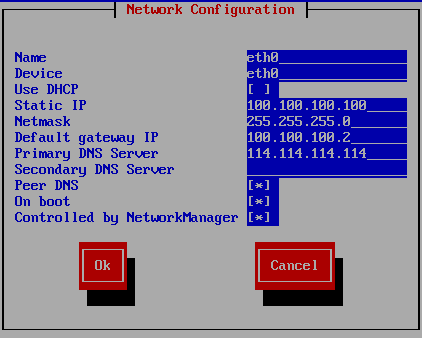
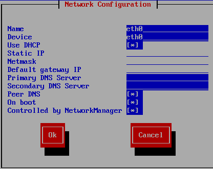
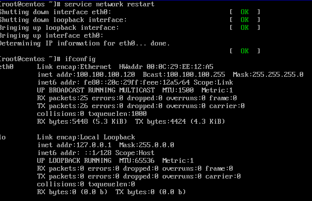
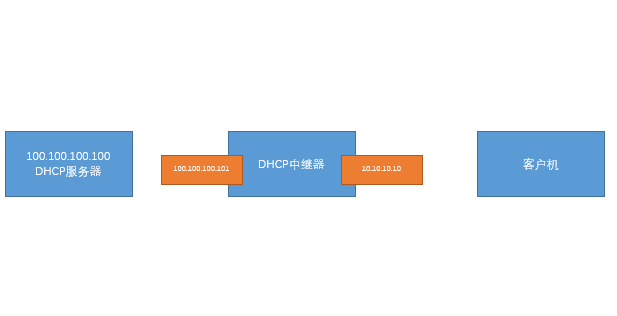

软件名：
dhcp #DHCP服务软件包
dhcp-common #DHCP命令软件包（默认已安装）
服务名：
dhcpd #DHCP服务名
dhcrelay #DHCP中继服务名
端口号：
udp 67 #作为客户端的目标端口，接收客户端的请求DHCP请求
udp 68 #作为服务器的源端口，用来向客户端回复数据包
配置文件：
dhcpd /etc/dhcp/dhcpd.conf #此配置文件默认是空的，需要找模板文件重新生成
dhcpd.conf.sample /usr/share/doc/dhcp-4.*.*/dhcpd.conf.sample
#DHCP的模板配置文件
dhcrelay /etc/sysconfig/dhcrelay #该文件时中继配置文件 vim /etc/dhcp/dhcpd.conf
subnet 100.100.100.0 netmask 255.255.255.0｛ #声明要分配的网段和子网掩码
range 100.100.100.120 100.100.100.130； #声明可用 IP 地址池
option domain-name "centos" ; #设置 DNS 域,可选。
option domain-name-servers 114.114.114.114 ; #设置 DNS 服务器地址 ,可选
option routers 100.100.100.2； #默认网关的地址
option broadcast-address 100.100.100.255； #广播地址，可选
default-lease-time 600； #默认租约（s）
max-lease-time 7200； #最大租约（s）
｝ 1、使用自定义nat模式，网段为100.100.100.0，方便一些软件包的安装。
2、关闭虚拟机的自带的dhcp配置，防止对自定义的dhcp服务造成干扰。
3、关闭服务器的防火墙，及selinux服务
使用setup工具配置网络

yum install dhcp -ycp -a /usr/share/doc/dhcp-4.*.*/dhcpd.conf.sample /etc/dhcp/dhcpd.conf
cp: overwrite `/etc/dhcp/dhcpd.conf'? y
vim /etc/dhcp/dhcpd.conf添加以下代码
subnet 100.100.100.0 netmask 255.255.255.0{
range 100.100.100.120 100.100.100.130; #设置ip地址范围
option domain-name-servers 114.114.114.114; #设置dns服务器
option routers 100.100.100.2; #设置网关
}[root@centos ~]# service dhcpd restart
Starting dhcpd: [ OK ]
#使用setup工具设置dhcp自动获取ip
#重启客户机网络

可查看日志信息，
tail /var/log/messages
Dec 21 15:17:17 centos dhclient[2235]: DHCPDISCOVER on eth0 to 255.255.255.255 port 67 interval 3 (xid=0x73189009)
Dec 21 15:17:17 centos dhclient[2235]: DHCPOFFER from 100.100.100.100
Dec 21 15:17:17 centos dhclient[2235]: DHCPREQUEST on eth0 to 255.255.255.255 port 67 (xid=0x73189009)
Dec 21 15:17:17 centos dhclient[2235]: DHCPACK from 100.100.100.100 (xid=0x73189009)dhcp服务器，将一个IP地址固定的分配给一台客户机。
[root@centos ~]# arp -a
? (100.100.100.1) at 00:50:56:c0:00:08 [ether] on eth0
? (100.100.100.2) at 00:50:56:eb:dc:de [ether] on eth0
? (100.100.100.120) at 00:0c:29:ee:12:a5 [ether] on eth0
host fantasia {
hardware ethernet 00:0c:29:ee:12:a5; #客户机mac地址
fixed-address 100.100.100.200; #要分配的ip，子网段就行
}service dhcpd restart
重启客户机网卡验证IP获取是否成功 service network restart一个DHCP服务器，为一个局域网内部客户机分配不同网段的ip，以解决IP地址不足问题。
cp -a ifcfg-eth0 ifcfg-eth0:0 #编辑此文件,留下重要信息就行。
DEVICE=eth0:0
ONBOOT=yes
IPADDR=200.200.200.200
NETMASK=255.255.255.0vim /etc/sysctl.conf
net.ipv4.ip_forward = 1 #此选项修改为1即可
sysctl -p #刷新内核参数配置文件 shared-network 224-29 {
subnet 100.100.100.0 netmask 255.255.255.0 {
option routers 100.100.100.100;
range 100.100.100.130 100.100.100.130; #只分配一个ip更好看到效果
}
subnet 200.200.200.0 netmask 255.255.255.0 {
option routers 200.200.200.200;
range 200.200.200.230 200.200.200.230;
}
}service dhcpd restart
service network restartRelay（DHCPR）DHCP中继是一个小程序，可以实现在不同物理网段之间处理和转发dhcp信息的功能
1、三台主机
2、拓扑图

修改/etc/dhcp/dhcpd.conf文件:
subnet 100.100.100.0 netmask 255.255.255.0 {#此处配置用不到，但不配置服务将会报错
range 100.100.100.120 100.100.100.120;
option routers 100.100.100.101;
}
subnet 10.10.10.0 netmask 255.255.255.0 {
range 10.10.10.20 10.10.10.30;
option routers 10.10.10.10;
}
重启dhcpd服务：
service dhcpd start 1、软件安装
yum -y install dhcp
2、修改配置文件
vim /etc/sysconfig/dhcrelay
INTERFACES="eth0 eth1"
DHCPSERVERS="100.100.100.100"
3、开启路由转发
vim /etc/sysctl.conf
netipv4.ip_forward = 1
sysctl -p
4、重启中继服务
service dhcrelay start